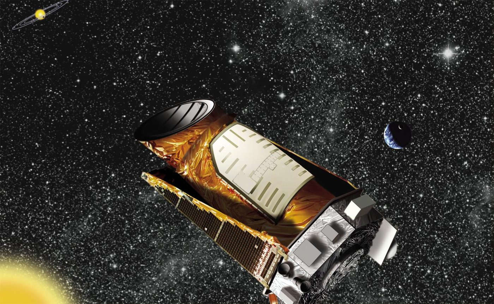
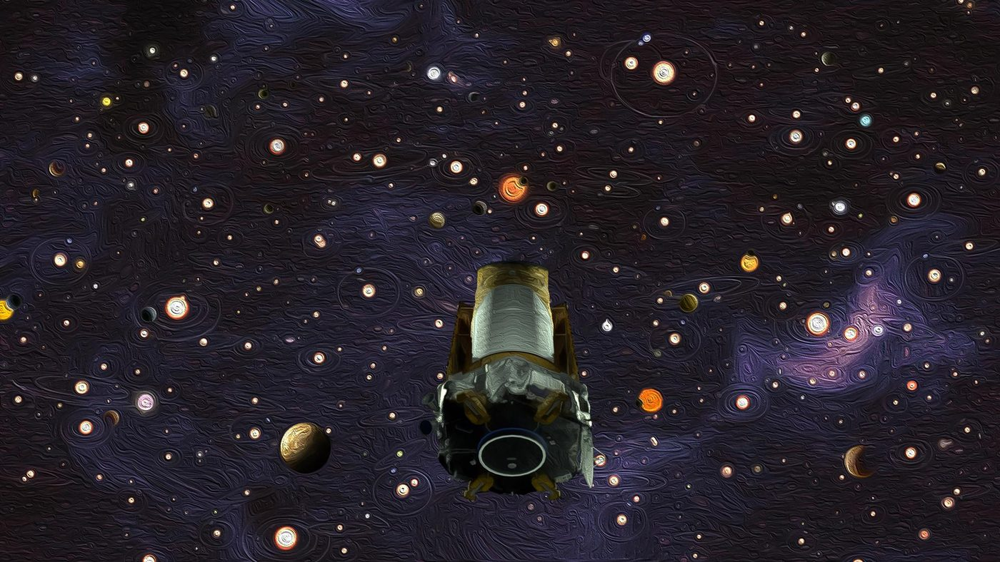

Home / Deep space / Kepler Space Telescope
Kepler Space Telescope
A planet hunter that found more worlds than anyone expected.
Deep space2009-2018Earth-trailing solar orbit

At a glance
| Launch | 7 Mar 2009 |
|---|---|
| Mass | about 1,040 kg |
| Mirror | 1.4 m |
| Camera | 95 megapixels |
| Orbit | Earth-trailing solar orbit |
Overview
Kepler watched a single patch of sky for years. When a planet crossed in front of its star, the starlight dipped by less than one percent. By looking for repeating dips, astronomers found planets of all sizes, including some orbiting two stars at once.
The Kepler space telescope was NASA’s first planet-hunting mission, assigned to search a portion of the Milky Way galaxy for Earth-sized planets orbiting stars outside our solar system. During nine years in deep space Kepler, and its second act, the extended mission dubbed K2, showed our galaxy contains billions of hidden "exoplanets," many of which could be promising places for life. They proved that our night sky is filled with more planets than even stars — knowledge that revolutionizes the understanding of our place in the cosmos
Launched on March 6, 2009, the Kepler space telescope combined cutting-edge techniques in measuring stellar brightness with the largest digital camera outfitted for outer space observations at that time. Originally positioned to stare continuously at 150,000 stars in one star-studded patch of the sky in the constellation Cygnus, it took the first survey of planets in our galaxy and became the agency's first mission to detect Earth-size planets in the habitable zones of their stars.
Where it began
Kepler was designed to stare at one patch of sky and measure tiny dips in starlight caused by planets passing in front of their stars.
The spacecraft was basically a single instrument – a specially designed 3-foot (1-meter) diameter aperture telescope and image sensor array – with a spacecraft built around it. The diameter of the telescope’s mirror was 4 feet, 7 inches (1.4 meters), one of the largest mirrors beyond Earth orbit.
Kepler was designed to monitor about 100,000 main-sequence stars over a period of three-and-a-half years. During its first six weeks of operation, Kepler discovered five exoplanets—named Kepler 4b, 5b, 6b, 7b and 8b (which NASA announced in January 2010).

The mission
It launched on 7 March 2009 and monitored about 150,000 stars in the constellations Cygnus and Lyra.
In April 2010, mission scientists published results that showed that Kepler had discovered the first confirmed planetary system with more than one planet transiting the same star, Kepler-9. That discovery was the result of surveying more than 156,000 stars over a period of seven months.
The planetary system orbiting Kepler-11, a yellow dwarf star about 2,000 light years from Earth, included six planets. NASA announced in February 2011 that these planets were larger than Earth, with the largest ones comparable in size to Uranus and Neptune.
How it worked
A giant camera detected stars dimming by a fraction of a percent. Repeated dips told scientists a planet's size and orbit.
Kepler detected planets by observing transits, or tiny dips in the brightness of a star that occur when a planet crosses in front of the star.
What it found
Planets are common, most stars have them, and small rocky worlds are plentiful. It found Kepler-186f, the first Earth-size planet in a star's habitable zone.
The most common size of planet Kepler found doesn’t exist in our solar system – a world between the size of Earth and Neptune – and we have much to learn about these planets. Kepler also found nature often produces jam-packed planetary systems, in some cases with so many planets orbiting close to their parent stars that our own inner solar system looks sparse by comparison.
"When we started conceiving this mission 35 years ago, we didn't know of a single planet outside our solar system," said the Kepler mission's founding principal investigator, William Borucki, now retired from NASA's Ames Research Center in California's Silicon Valley. "Now that we know planets are everywhere, Kepler has set us on a new course that's full of promise for future generations to explore our galaxy."
Why it was left behind
Two of Kepler's pointing wheels failed by 2013. Engineers invented the K2 mission, using sunlight pressure for balance. In 2018 it ran out of fuel and was shut down.
In May 2013, the Kepler spacecraft lost the second of four gyroscope-like reaction wheels, which are used to precisely point the spacecraft, effectively ending new data collection for the original mission. The spacecraft required three functioning wheels to position the telescope, so the malfunction robbed Kepler of its ability to stay pointed at a target without drifting off course.
That’s because the Sun, the very body that provides Kepler with its energy needs, also pushes the spacecraft around by the pressure exerted when the photons of sunlight strike the spacecraft. Without a third wheel to help counteract the solar pressure, the spacecraft's ultra-precise pointing capability could not be controlled in all directions.
So engineers came up with a clever scheme. They gave the spacecraft a new lease on life by using the pressure of sunlight to maintain its pointing, like a kayak steering into the current. The redesigned mission, “K2,” still hunted for planets, but it scanned a larger swath of sky than before, along the ecliptic plane.
This extended mission required the spacecraft to shift its field of view to new portions of the sky roughly every three months in what the team referred to as a “campaign.” Initially, the Kepler team estimated that the K2 mission could conduct 10 campaigns with the remaining fuel; it reached 19.
K2 lasted as long as the first mission and bumped Kepler's count of surveyed stars up to more than 500,000. The mission began new types of research as well, such as the study of objects within our solar system, exploded stars, and distant supermassive black holes at the hearts of galaxies.

Before retiring the spacecraft on Oct. 30, 2018, scientists pushed Kepler to its full potential, successfully completing multiple observation campaigns and downloading valuable science data even after initial warnings of low fuel. The latest data, from Campaign 19, will complement the data from NASA's newest planet hunter, the Transiting Exoplanet Survey Satellite, launched in April 2018. TESS builds on Kepler's foundation with fresh batches of data in its search of planets orbiting some 200,000 of the brightest and nearest stars to the Earth, worlds that can later be explored for signs of life by missions such as NASA's James Webb Space Telescope, and other observatories to come.
Where it is now
Kepler drifts in an orbit around the Sun trailing Earth, safely far away.
The observation of so many stars has allowed scientists to better understand stellar behaviors and properties, which is critical information in studying the planets that orbit them. New research into stars with Kepler data also is furthering other areas of astronomy, such as the history of our Milky Way galaxy and the beginning stages of exploding stars called supernovae that are used to study how fast the universe is expanding. The data from the extended mission were also made available to the public and science community immediately, allowing discoveries to be made at an incredible pace and setting a high bar for other missions. Scientists are expected to spend a decade or more in search of new discoveries in the treasure trove of data Kepler provided.
Kepler has opened our eyes to the diversity of planets that exist in our galaxy. Analysis of Kepler’s discoveries concludes that 20 to 50 percent of the stars visible in the night sky are likely to have small, possibly rocky, planets similar in size to Earth, and located within the habitable zone of their parent stars. That means they’re located at distances from their parent stars where liquid water — a vital ingredient to life as we know it — might pool on the planet's surface.
After reaction wheels failed, engineers balanced the telescope against sunlight pressure and continued with the K2 mission. Kepler's data show that planets are common and that small rocky worlds are everywhere. Researchers and volunteers are still finding planets in its archive.
Timeline of events
- Mar 2009 Launch
- Dec 2011 Kepler-22b, first confirmed planet in a habitable zone
- 2012-13 Two reaction wheels fail
- Apr 2014 Kepler-186f announced
- 30 Oct 2018 Mission ends
2018
Fuel ran out; retired on 30 October.
Read more on NASAText and images adapted from NASA mission pages.